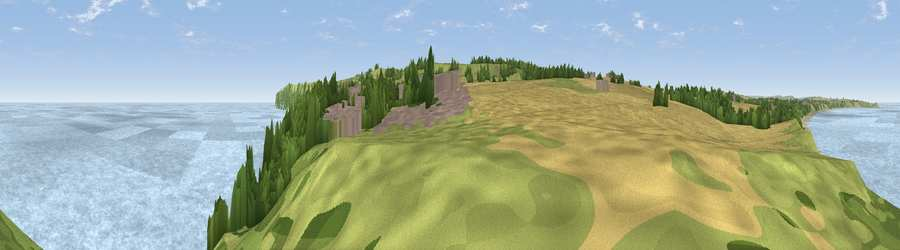

Viewpoint near Reighton
#13796 in England · top 39% of its area beats it · near Reighton · access?Where it is
The exact computed spot (TA 13825 76425). Click the marker for map links.
Public access: no public right of way or access land is recorded at this exact spot — it may be on private land. Computed from Natural England's CRoW access layer and OpenStreetMap rights of way — not the legal definitive map. Always verify locally.
The view, rendered

A 360° render of this exact spot computed from the terrain model, tree cover and land cover — summer colours, afternoon light, calibrated against photographs of famous viewpoints. Real trees, hedges and buildings will differ in detail.
The panorama
Grey silhouette: terrain skyline in each direction (720 bearings, Earth curvature and refraction included). Dashed green: skyline with trees (+15 m) and buildings (+8 m) as obstacles. Blue strip: how far the ground is visible on each bearing.
Where the view opens
Wedge length = distance to the farthest visible ground on that bearing (vegetation-aware). Rings at 10, 25 and 50 km.
What fills the view
60% water · 14% cropland · 13% grassland · 6% woodland · 6% built-up · 2% bare ground
Angular shares of the visible panorama (visual magnitude), not map area. Landscape diversity 0.54 (0–1 Shannon).
Key numbers
More beautiful places nearby
The staircase of upgrades: each row has a higher view potential than everything closer. Driving times are estimates from straight-line distance, calibrated against real road routing — check an actual route before setting out.
| Place | Direction | Drive | Score |
|---|---|---|---|
| Viewpoint near Speeton | SE · 1 km | ~3 min | 62.4 |
| Viewpoint near Speeton | SE · 1 km | ~4 min | 68.5 |
| Beacon Hill | SSE · 2 km | ~4 min | 79.1 |
| Viewpoint near Speeton | SSE · 2 km | ~5 min | 80.0 |
| Olivers Mount | NW · 14 km | ~26 min | 80.3 |
| Viewpoint near Ravenscar | NNW · 29 km | ~45 min | 82.7 |
| Viewpoint near Ravenscar | NNW · 30 km | ~47 min | 87.3 |
| Viewpoint near Ravenscar | NNW · 31 km | ~48 min | 90.0 |
54.17100, -0.25784 · source: screening · position refined by local search. Computed location — check access rights before visiting.